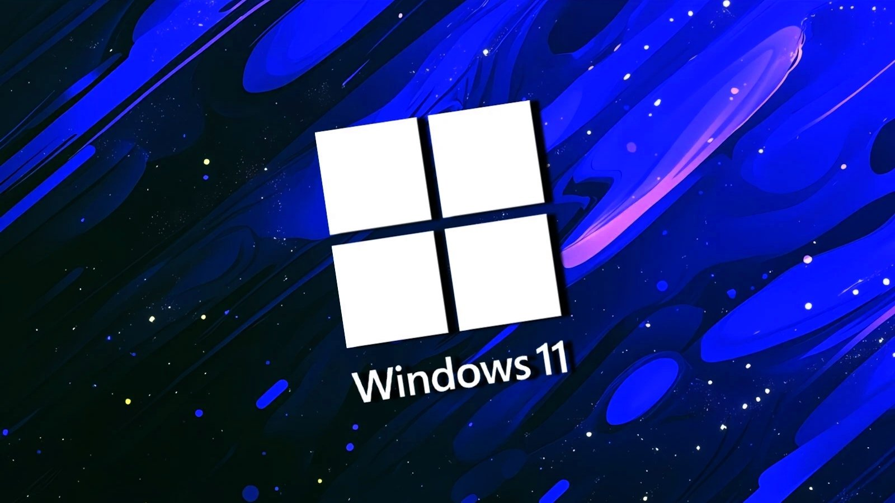

Microsoft ships emergency patch to fix Windows 11 startup failures
📅 2 juin 2025 — BleepingComputer
Microsoft a publié une mise à jour hors-bande (KB5062170) pour corriger un problème connu provoquant des échecs de démarrage sur certaines machines Windows 11 après l'installation du correctif de sécurité KB5058405 (mai 2025). Les systèmes affectés affichent des erreurs de récupération 0xc0000098 liées à ACPI.sys, indiquant que le système d'exploitation ne peut pas être chargé.
Le problème touche principalement les environnements d'entreprise : machines virtuelles Azure, Azure Virtual Desktop, et VMs hébergées sur Citrix ou Hyper-V. Microsoft fournit des paquets MSU autonomes dans le Microsoft Update Catalog pour installer manuellement la correction d'urgence.
Lire l'article complet sur BleepingComputer
New Sturnus Android trojan quietly steals data from infected devices
📅 Nov 2025 — The Hacker News
Un nouveau cheval de Troie Android nommé "Sturnus" a été repéré, opérant discrètement pour voler des données sensibles depuis les appareils infectés. Il se propage via des applications malveillantes et exploite des permissions étendues pour collecter messages, contacts et informations d'authentification, tout en évitant la détection grâce à des techniques de furtivité.
Les administrateurs et utilisateurs sont invités à vérifier les autorisations des applications, éviter les sources non officielles et installer les mises à jour de sécurité. Plus d'informations et l'analyse complète sont disponibles sur The Hacker News.
Lire l'article sur The Hacker News

Bearlyfy Hits Russian Firms with Custom GenieLocker Ransomware
📅 27 mars 2026 — The Hacker News
Un groupe pro-ukrainien surnommé Bearlyfy (aussi appelé Labubu) aurait mené plus de 70 attaques visant des entreprises russes. D'après l'analyse citée, les intrusions exploitent des services exposés/vulnérables, puis déploient des outils d'accès distant afin de chiffrer ou détruire/modifier des données.
L'article indique aussi une évolution de la menace avec l'usage d'un ransomware Windows personnalisé, GenieLocker, observé à partir de mars 2026.
Lire l'article sur The Hacker News
Comment les pirates ont effacé 80 000 PC chez Stryker sans le moindre malware
📅 17 mars 2026 — IT-Connect
Une cyberattaque a touché Stryker : les attaquants auraient réussi à effacer à distance des dizaines de milliers d'appareils en détournant des outils d'administration cloud, sans déployer de malware. Le scénario présenté décrit une compromission de compte Microsoft 365, puis l'utilisation d'actions de type Wipe via Microsoft Intune.
Cet incident illustre les risques liés aux comptes à privilèges et à la centralisation des actions d'administration sur des outils cloud.
Lire l'article sur IT-Connect